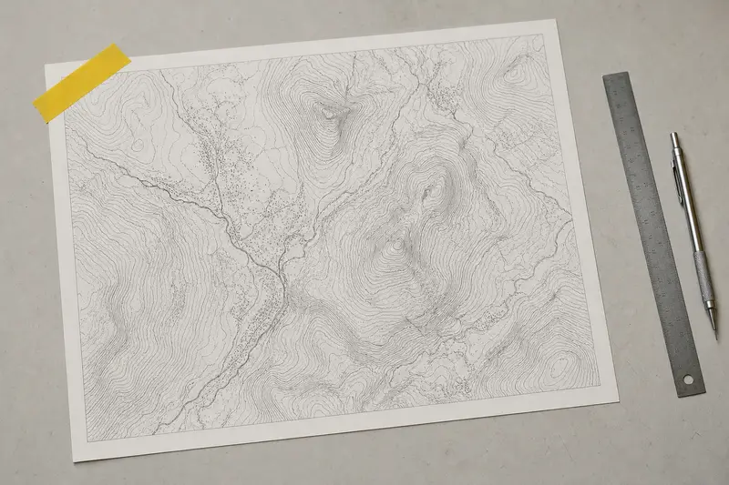
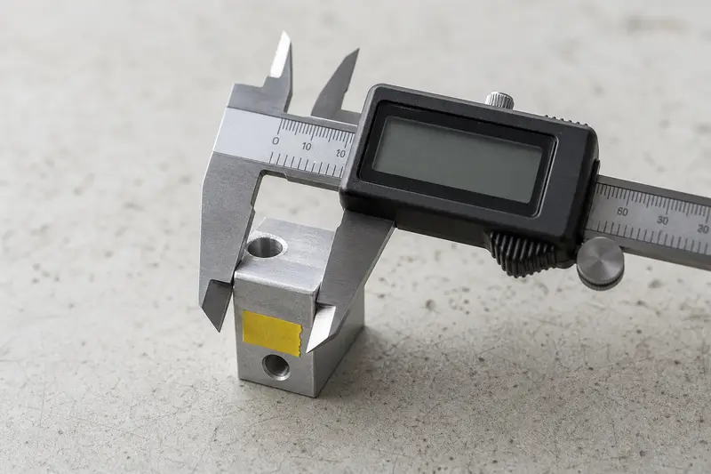
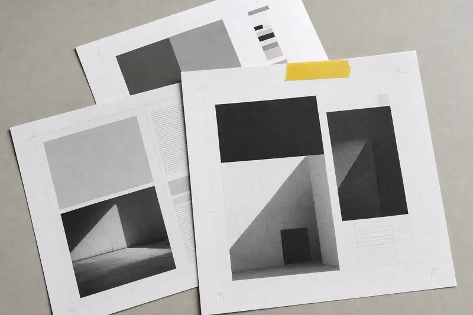
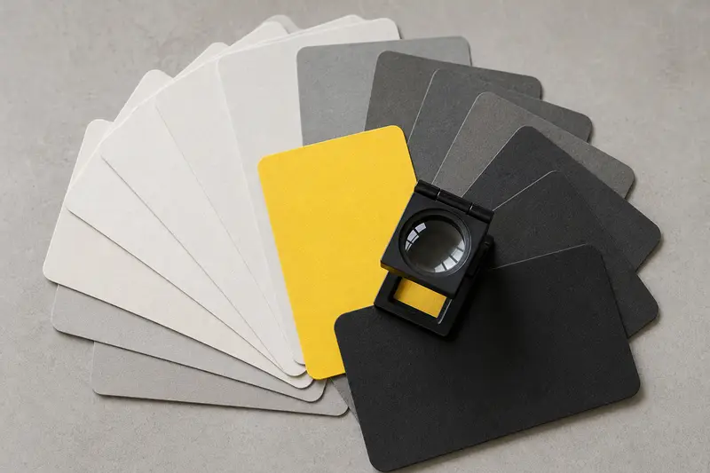

Planches
Même mise en page, mêmes effets, pilotés par GSAP ScrollTrigger (scrub) : 45,9 Ko compressés de bibliothèque en plus.
Essais

RelevéPl. 01 - image générée 
MesurePl. 02 - image générée 
ÉpreuvePl. 03 - image générée 
NuancierPl. 04 - image générée
Fin de l'essai
Sous la section épinglée, le contenu reprend normalement : ancres, recherche dans la page et retour arrière fonctionnent, car le défilement reste celui du navigateur.